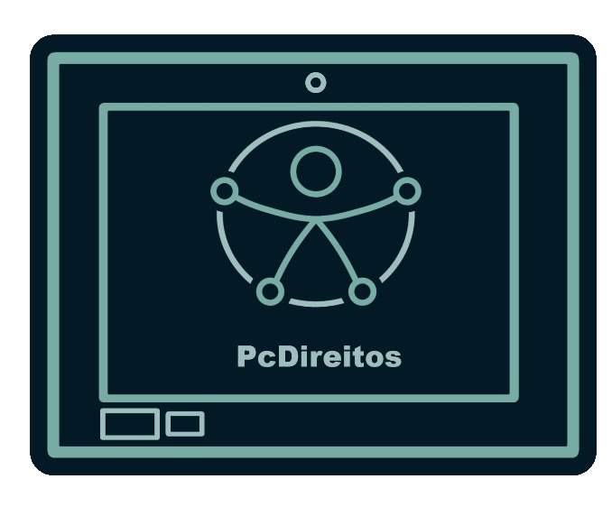

Decidir em conjunto
Lideranças com deficiência compartilham como participação real transforma projetos e comunidades.

Pessoas com direitos
Central de mídia
Vídeos, conversas e experiencias interativas que colocam pessoas com deficiência no centro da narrativa no canal TEDx Talks.
Mais para assistir!
Conteúdos que ampliam perspectivas sobre autonomia, acessibilidade e representatividade.
Lideranças com deficiência compartilham como participação real transforma projetos e comunidades.
Conteudo incorporado
Conteúdos externos podem ser acessados sem sair da página, sempre com título, contexto e indicação clara da fonte.
A mídia acessível não é uma versão alternativa. É a experiência completa.
COMPROMISSO DE ACESSO
Conteúdos falados acompanhados de alternativas em texto.
Informações visuais importantes também narradas em áudio.
Players identificados, navegação por teclado e foco visível.
PODCAST PCDireitos
Relatos, ideias e perguntas para ouvir com calma, com conteúdos pensados para ampliar o diálogo sobre inclusão.
Episódio 01 · Em preparação
Uma introdução sobre como ouvir pessoas com deficiência transforma espaços, serviços e relações.
O áudio deste episódio estará disponível em breve.
Uma conversa introdutória sobre escuta ativa, autonomia e a importância de incluir pessoas com deficiência nas decisões que afetam suas vidas.